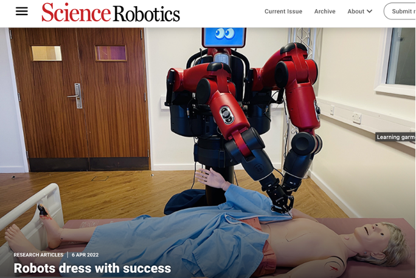
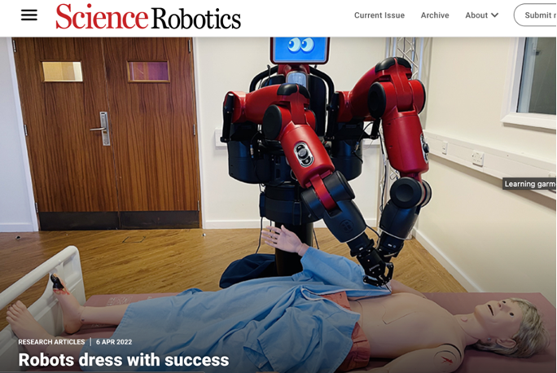

Fan Zhang
I am a senior research scientist at Honda Research Institute EU. I am also a visiting researcher at Imperial College London. I was an Eric and Wendy Schmidt AI in Science Postdoctoral Fellow funded by Schmidt Futures. I received my Ph.D. degree from Imperial College London (advised by Prof. Yiannis Demiris).
My research interests cover many aspects of machine learning algorithms applied to general robot manipulation. My research has been accepted at Science Robotics and T-RO. I have been awarded The UK Best PhD in Robotics Award 2020 1st place held by Queen Mary, and Best Research Paper (Early Career Researcher), 2025 AI & Robotics Research Awards held by TAS Hub, Responsible Ai UK and the Royal Society.
CV Github G. Scholar LinkedIn Twitter
 

Learning Robot Manipulation from Audio World Models
Fan Zhang, Michael Gienger
arXiv, 2025
Paper
Affordance-based Robot Manipulation with Flow Matching
Fan Zhang, Michael Gienger
arXiv, 2025
Webpage •
Paper •
Code
Learning garment manipulation policies toward robot-assisted dressing
Fan Zhang, Yiannis Demiris
Science Robotics, 2022
★ Best Research Paper (Early Career Researcher), 2025 AI
& Robotics Research Awards, held by TAS Hub, Responsible Ai UK and the Royal Society ★
Webpage •
Paper •
Video •
Code
Probabilistic Real-Time User Posture Tracking for Personalized Robot-Assisted Dressing
Fan Zhang, Antoine Cully, Yiannis Demiris
IEEE Transactions on Robotics, 2019
★ The Queen Mary UK Best PhD in Robotics Award 2020 1st
place ★
Paper •
Video •
Code
CCDP: Composition of Conditional Diffusion Policies with Guided Sampling
Amirreza Razmjoo, Sylvain Calinon, Michael Gienger, Fan Zhang
International Conference on Intelligent Robots and Systems (IROS), 2025
★ Outstanding Paper Award at IROS 2025 Workshop on The
Art of Robustness: Surviving Failures in Robotics ★
Webpage •
Paper
Generation of Real-time Robotic Emotional Expressions Learning from Human Demonstration in Mixed Reality
Chao Wang, Michael Gienger, Fan Zhang
International Conference on Intelligent Robots and Systems (IROS), 2025, Foundation Models for
Robotic Design workshop
Webpage •
Paper
CARMA: Context-Aware Situational Grounding of Human-Robot Group Interactions by Combining Vision-Language Models with Object and Action Recognition
Joerg Deigmoeller, Stephan Hasler, Nakul Agarwal, Daniel Tanneberg, Anna Belardinelli, Reza
Ghoddoosian, Chao Wang, Felix Ocker, Fan Zhang, Behzad Dariush, Michael Gienger
IEEE International Conference on Robotics and Automation (ICRA), 2026
Webpage •
Paper
Self-Supervised Learning for Automated Multi-Modal Dance Performance Assessment
Yun Zhong, Fan Zhang, Yiannis Demiris
International Conference on Acoustics, Speech, and Signal Processing (ICASSP), 2023
Paper •
Video •
Code
Visual-Tactile Learning of Garment Unfolding for Robot-Assisted Dressing
Fan Zhang, Yiannis Demiris
IEEE Robotics and Automation Letters (RA-L), 2023
Paper •
Video •
Code
Grasp-oriented Fine-grained Cloth Segmentation without Real Supervision
Ruijie Ren, Mohit Gurnani Rajesh, Jordi Sanchez-Riera, Adrian Lopez-Rodriguez, Fan Zhang, Yurun
Tian, Guillem Alenyà, Antonio Agudo, Yiannis Demiris, Krystian Mikolajczyk, Francesc
Moreno-Noguer
International Conference on Machine Vision and Applications, 2023
Paper
Learning Grasping Points for Garment Manipulation in Robot-Assisted Dressing
Fan Zhang, Yiannis Demiris
IEEE International Conference on Robotics and Automation (ICRA), 2020
Paper •
Video •
Code
Preoperative Optimization of the Surgical Robot considering Internal Diversity of Workspace
Zhiyuan Yan, Zhijiang Du, Fan Zhang, Weidong Wang
Proceedings of the Institution of Mechanical Engineers, Part C: Journal of Mechanical Engineering
Science, 2018
Paper

Personalized Robot-Assisted Dressing using User Modeling in Latent Spaces
Fan Zhang, Yiannis Demiris
International Conference on Intelligent Robots and Systems (IROS), 2017
Paper •
Video •
Code
Preoperative Planning for the Multi-Arm Surgical Robot using PSO-GP-based Performance Optimization
Fan Zhang, Zhiyuan Yan, Zhijang Du
IEEE International Conference on Robotics and Automation (ICRA), 2017
Paper •
Video

Preoperative setup planning for robotic surgery based on a simulation platform and Gaussian process
Fan Zhang, Zhiyuan Yan, Zhijang Du
IEEE International Conference on Mechatronics and Automation (ICMA), 2016
★ Best Student Paper Award ★
Paper •
Video
An Under-Actuated Manipulation Controller Based on Workspace Analysis and Gaussian Processes
Fan Zhang, Yanyu Su, Xiang Zhang, Wei Dong, Zhijiang Du
International Conference on Intelligent Robots and Systems (IROS), 2015
Paper •
Video
2025
Outstanding Paper Award, IROS 2025 Workshop on The Art of Robustness: Surviving Failures in Robotics2024
Invited Talk, University of Hamburg Technical Aspects of Multimodal Systems (TAMS)2023
Invited Talk, King's College London Social AI & Robotics Laboratory Seminar2022
Invited Talk, Tsinghua University Intelligent Robot Seminar (live audience: 150,000)2021+
Invited Talk, The Institution of Engineering and Technology Human Motion Analysis for Healthcare Applications
★ Science Robotics, 2022 ★
Learning Garment Manipulation Policies towards Robot-Assisted Dressing
Fan Zhang, Yiannis Demiris
Paper https://www.science.org/doi/10.1126/scirobotics.abm6010
Code is here https://github.com/fan6zh/robot_dressing
Please find more details on our website https://fan6zh.github.io/robot-dressing/